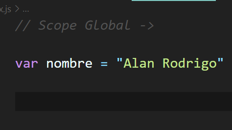
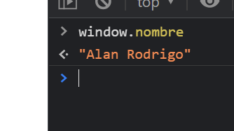
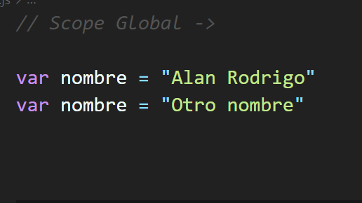
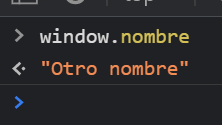
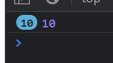
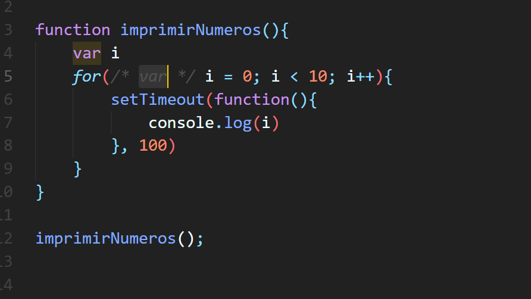
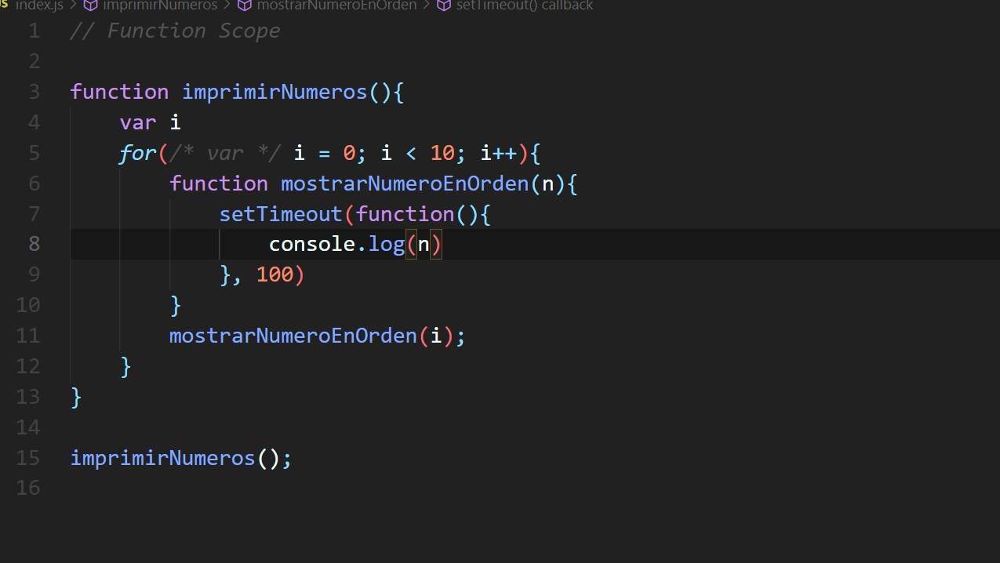
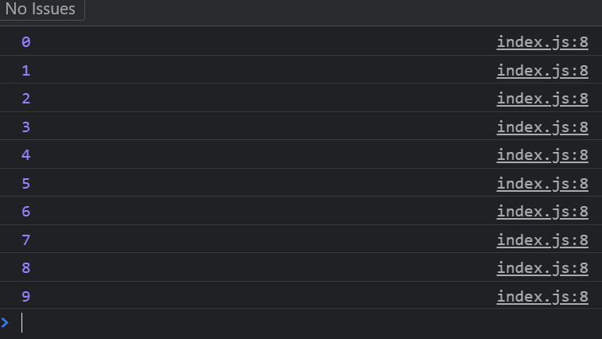

Scope
El scope o ambito de una variable representa el tiempo de vida de la que esta existe, puede ser una variable o ela rgumento de una funcion. Esto es muyy importante es los lenguajes de programacion por que evita que reescribamos una variable que ya habiamos definido. Por desgracia, Javascript no siempre conto con el mejor sistema de scope y de variables. Por suerte el lenguaje a cambiado, a mejorado muchisimo, y hoy tenemos dos declaraciones de variables mas como lo son let y const, que nos ayudan a evitar problemas comunes. Comencemos con el scope global. ¿Que es el scope global? Veamoslo con un ejemplo

Esta variable llamada "nombre" que hemos declarado, es una variable que tiene un alcance global. Pero ¿Por que estamos tan seguro de ello? Bueno, esto tambien lo podemos ver en la consola. Si en ella buscamos la variable, la encontraremos de forma global.

Como vemos en la imagen, si buscamos nuestra variable dentro del objeto windows, la podremos encontrar. Pero ¿por que window?
Window es nuestro ambito global. Toda variable que declaremos fue de una funcion, fuera de un bloque, va a quedar en el scope global. Y ese scope es window. Algo que pudiera ocurrir en este ambito de scope, es el riesgo de sobreescritura. Continuemos con el ejemplo anterior, y veamos que ocurre:

En este caso, hemos sobreescrito la variable "nombre". Veamos que ocurre en la consola:

¡Si, asi es! Nuestra variable que contenia el valor de "Alan Rodrigo", se ha sobreescrito por el valor "Otro nombre".
Veamos ahora el scope en las funciones (o Function Scope). Estas son variables declaradas dentro de una funcion, y por lo tanto dentro de la funcion se crea un scope, en donde las variables seran visibles dentro de la misma. Veamos un ejemplo para entenderlo mejor.

En la imagen, podemos ver una funcion llamada "imprimirNumeros", pero que a su vez, dentro de ella, hay un ciclo for por ejecutarse, y que cuando lo haga, va a mostar por consola los numeros correspondientes. Quizas pienses que por consola, se van a mostar numeros del 0-9 ordenados segun la ejecucion. Pero esto no es correcto, lo que se va a mostar por consola es lo siguiente.

Pero, ¿que esta ocurriendo? 😨
Tranquilo, te lo explicare. Lo que esta ocurriendo es que se ha mostrado por consola 10 veces el numero 10. Lo que esta ocurriendo, tiene que ver con Funcion Scope. Hya algo que Javascript hace con la variable var. Cuando se ejecute el programa, lo que va a ocurrir lo mostrare en la imagen.

Javascript va a declarar por fuera la variable, va a comenzar el loop del ciclo for. Pero el loop va a terminar antes de que se ejecute la funcion dentro del setTimeout. Tanto es asi que al momento de que se ejecute la funcion del setTimeout, el loop habra terminado y el valor de i sera 10. Es por eso que vemos en consola 10 veces el numero 10. Este problema lo podemos resolver de la siguiente manera.

Y finalmente, podemos ver el resultado esperado por la consola.
